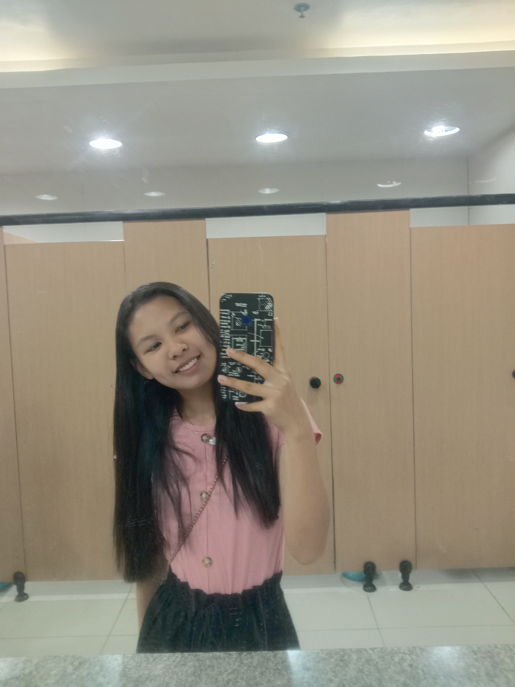

About Me
"Hello everyone, My name is Princess Aira D. Agusin, and I am thrilled to be here as a 1st Year College at College of Enginering in University of Southern Mindanao . I am majoring in Computer Science, and I chose this field because the world of technology has always captivated me, and that's what led me to choose this exciting field. Originally from Kibudoc, Matalam, North Cotabato, I have always been fascinated by the power of computers and the endless possibilities they offer, which has influenced my decision to pursue Computer Science. These experiences have not only allowed me to meet incredible people but also helped me to learn how to use technology to solve a complex problems and create innovation solutions. Outside of my academic pursuits, you can often find me playing volleyball, and table tennis. I believe that "Enjoy every process and do it as best I can.", and I am excited about the opportunities and challenges that college has to offer. I am looking forward to getting to know all of you and making the most of my college experience. Feel free to reach out if you have any common interests or if you just want to chat. Thank you!"
Portfolio
Princess Aira D. Agusin
Contact Information:
- Email: agusinprincess@gmail.com
- Contact Number: 09087742837
- Facebook Account: Princess Aira Agusin
Education
Bachelor of Science in Computer Science
University of Southern Mindanao